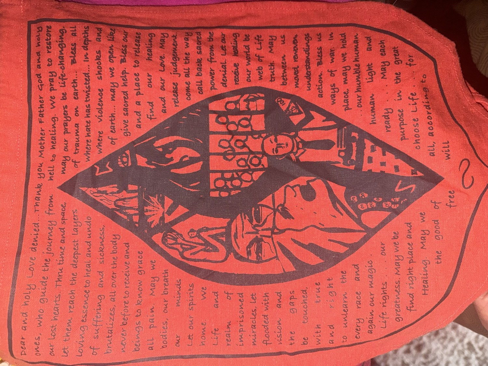

Read aloud, with music · filmed at Heart Creek Bunker, Alberta
The words
Dear and holy Love denied…
Thank you Mother Father God and holy ones, who guide the journey from hell to healing. We pray to restore our lost hearts. Thru time and space, may our prayers be life-changing. Let them reach the deepest layers of trauma on earth… Bless all loving essence to heal and undo where hate has twisted… In depths of suffering and sickness, where violence shocks and brutalizes, all over the body of earth… may we open like never before to receive and give sacred help.
Bless our beings to know grace and a place to release all pain. May we find our healing bodies, our breath and our Love. May our minds release judgement. Let our spirits come all the way home.
We call back sacred Life and power from the realm of denial. Let our imprisoned receive healing miracles, let our world be flooded with web of Life vision and truth.
May the gaps between us be touched, moved, rewoven — understandings with true and right action. Bless us to unlearn the ways of war. In every race and place, may we hold again our magic… our humble human Life rights… our human light and greatness.
May we be ready… May each find right place and purpose in the great Healing.
May we choose Life… for the good of all, according to free will.

Author unknown. The prayer came to us on a hand-lettered cloth.
Offered to the Grief & Gratitude circle on the autumn equinox, September 21st 2026, alongside Francis Weller’s gates of grief.